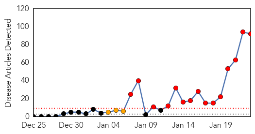
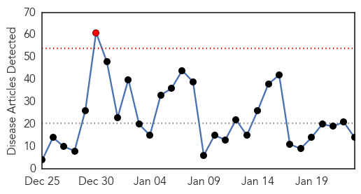

Measles
30-Day Web Trend
15 alerts, 3 warnings

30-Day Twitter Trend
0 alerts, 0 warnings

Article Locations

Article Confidences

Top Articles:
- 0.999
- Flu Number of Deaths This Year Manage to Eclipse Those of the 4 Previous Years Combined Together
- 0.998
- 78 People Now Infected in U.S. Measles Outbreak
- 0.997
- Outbreak of 51 measles cases linked to Disneyland
- 0.995
- It's A Small World After All: Disneyland's Measles Outbreak Spreads Quickly
- 0.993
- California Measles Virus Outbreak: Symptoms and Signs, Treatments and Vaccines, and Prevention
- 0.991
- School Officials Working to Stem Spread of Measles
- 0.991
- Measles investigation narrows time frames for public exposure
- 0.990
- Vaccine Exemptions Back in Spotlight After Measles Outbreak
- 0.988
- Disneyland measles outbreak puts the spotlight on kids who don't get the vaccine
- 0.987
- Disneyland measles outbreak catches many by surprise
- 0.980
- Measles case in Michigan likely related to Disneyland outbreak
- 0.980
- Four measles cases confirmed in San Bernardino County
- 0.979
- Disneyland measles outbreak spreads
- 0.975
- California alert after Disneyland measles outbreak
- 0.974
- Our say: Wrongheadedness and measles don't mix
- 0.972
- How the U.S. went from eliminating measles to a measles outbreak at Disneyland
- 0.972
- Measles outbreak changes game for Bay Area hospitals
- 0.972
- Disneyland measles outbreak spreads
- 0.972
- Disneyland Measles Outbreak in California Highlights Absurdity of Anti-Vaccine Movement
- 0.972
- Disneyland measles outbreak spreads
- 0.972
- Disneyland Measles Outbreak Blamed on Anti-Vaccine Movement : Society : Chinatopix
- 0.969
- California Measles Outbreak Prompts Schools to Issue Alert to Parents in San Francisco Bay Area
- 0.967
- Disneyland measles outbreak spreads to 6 states
- 0.966
- Unvaccinated Face Ongoing Risk But Immunized Also Infected
- 0.966
- Five Disneyland Employees Infected With Measles In California
- 0.962
- Measles outbreak raises question of vaccine exemptions
- 0.962
- CDC urges parents to get children vaccinated against measles
- 0.961
- Measles Disneyland Anti-Vaccine
- 0.960
- Disney parks-linked measles outbreak grows to 70 cases
- 0.957
- The New Measles
- 0.952
- 70 Cases Linked to Disneyland; Still Spreading?
- 0.951
- Measles Outbreak Linked To Disney Theme Parks
- 0.949
- Central Ga. doctors encourage vaccination
- 0.947
- Michigan confirms first measles case of 2015, urges residents to vaccinate
- 0.947
- Measles is horrible and is yet another thing the anti-vaccine movement is wrong about
- 0.944
- Camarillo Bank Visitors Might Have Been Exposed to Measles
- 0.940
- I've only had one dose of the measles vaccine. What should I do?
- 0.938
- Michigan Confirms First Measles Case of 2015
- 0.938
- First Michigan measles case in 2015 confirmed
- 0.935
- Disneyland measles outbreak puts California on alert
- 0.930
- Health Dept. encourages vaccinations in light of Measles scare
- 0.928
- Measles outbreak has some doctors reconsidering vaccine recommendations
- 0.923
- UPDATED: State says Alaska measles case is likely not a 'true case' of the illness
- 0.923
- NIAID director Dr. Anthony Fauci: It's a "shame" parents aren't vaccinating children
- 0.922
- Measles outbreak: Number of cases grows in Bay Area, statewide
- 0.919
- Disneyland measles outbreak puts California on alert
- 0.914
- Measles outbreak: Number of cases grows in Bay Area, statewide
- 0.913
- Measles tied to lower rate of vaccination
- 0.913
- Measles case reported in Oakland County; vaccine shots available
- 0.910
- Measles outbreak casts spotlight on anti-vaccine movement
Showing top 50 articles...
Top Tweets:
-
No tweets found for Jan 23, 2015
Influenza
30-Day Web Trend
1 alerts, 0 warnings

30-Day Twitter Trend
0 alerts, 0 warnings

Article Locations

Article Confidences
Top Articles:
- 0.997
- Doctors urged to prescribe antiviral drugs for flu patients earlier
- 0.993
- Four people dead from the flu this season · TheJournal.ie
- 0.986
- Flu in B.C. has 'passed the epidemic peak'
- 0.986
- Flu in B.C. has 'passed the epidemic peak': Health officials
- 0.947
- Building a better flu vaccine than this year’s debacle
- 0.936
- Seven Nigerian States Report Bird Flu Outbreaks
- 0.874
- NYC's New Flu Mandate
- 0.790
- Flu cases still on the rise in South Dakota
- 0.766
- Could flu vaccination protect your sense of smell?
- 0.764
- Today's stories from newspapers in Orangeville
- 0.685
- SFH on seasonal influenza and medical incidents
- 0.631
- Flu activity drops in Marion County; Flu deaths in Indiana reach
- 0.587
- Health Department Announces Clinic Schedule for Week of Jan. 26
- 0.580
- Poultry Industry Worried by Bird Flu Outbreak
Top Tweets:
-
No tweets found for Jan 23, 2015